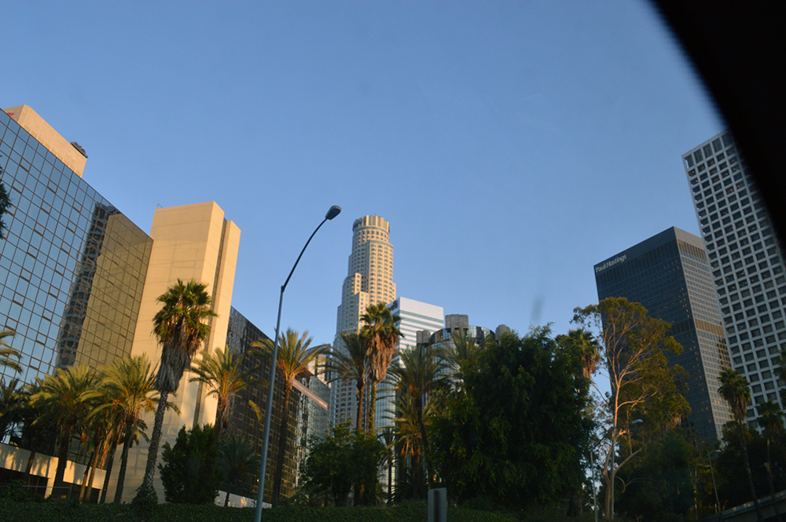
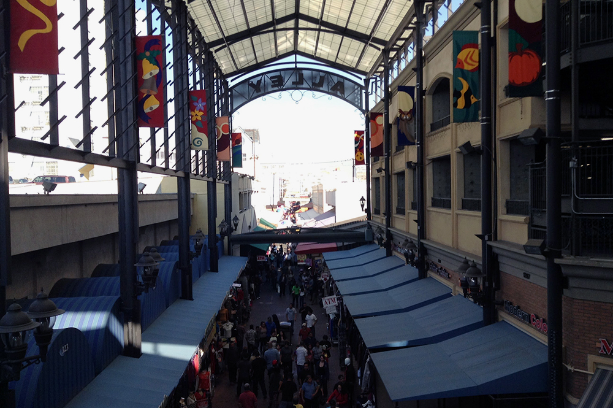
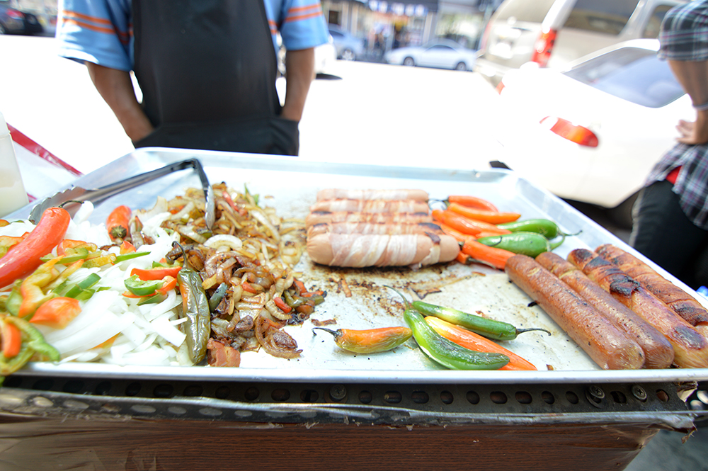
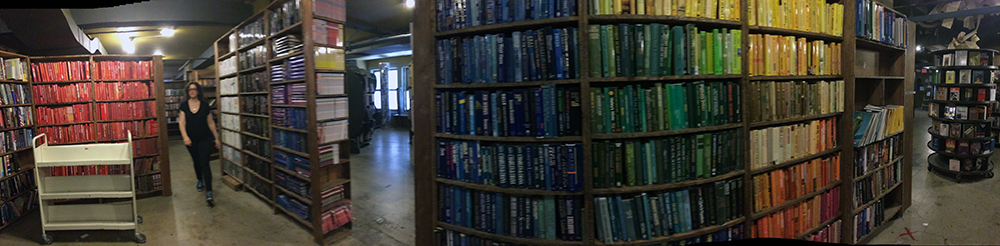
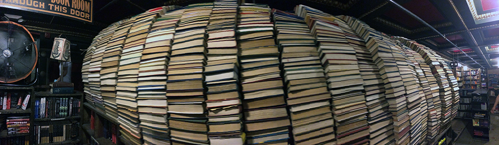

Los Angeles - Downtown
Things to do
To be honest, Downtown LA is not as exciting/interesting as other placces in the city. Downtown LA is a lot different from Downtown in other cities. In fact, Downtown is considered to be the opposite of Beverly Hills, in some ways, but it's not like Compton.
This doesn't mean you shouldn't visit. There are many interesting places to visit.
For locals, Downtown is almost a synonym for the alleys, which is another name for The Fashion District. Again, this is not where you'll find Prada or Gucci stores, but it's almost impossible to go and not buy anything. This is the best place to buy souvenirs.
Also, this place is know for it's hot dogs. You'll see a mini food truck on every corner selling bacon wrapped hotdogs.
This is one of my favorite places in the whole city: The Last Bookstore.

If you like books and art, you will love this place. You can find from the newest book to $3,000 first editions. This bookstore is so awesome there is a maze made with bookshelfs on the second floor (where most books are $1!), there a vaults with books in them, an arc made with books, and art excibitions every now and then.
 Things to know
- If you are thinking about going clubing, there are some 18+ clubs here that are 21+ on certain days. So you might want to check their websites.
- If you are into EDM, Exchange is the place to go.
- Chinatown, Little Tokyo, La Villita, Small Ethiopia are close to Downtown.
- They finally finished the metro line that goes from Downtown LA to Downtown Santa Monica.